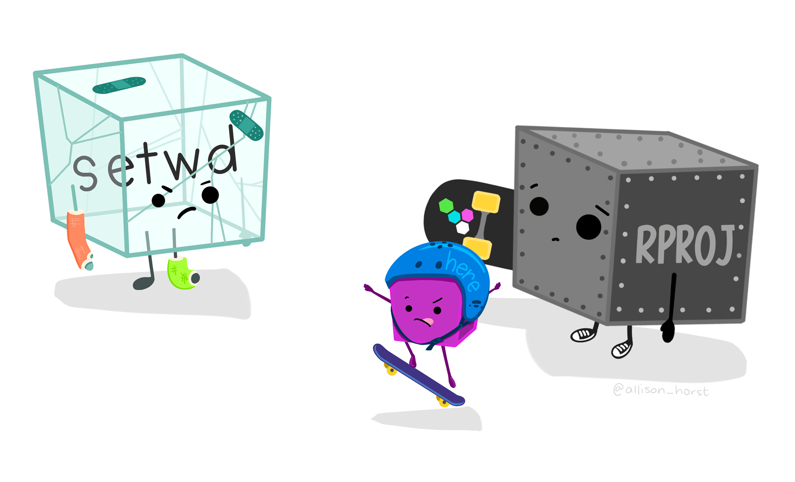
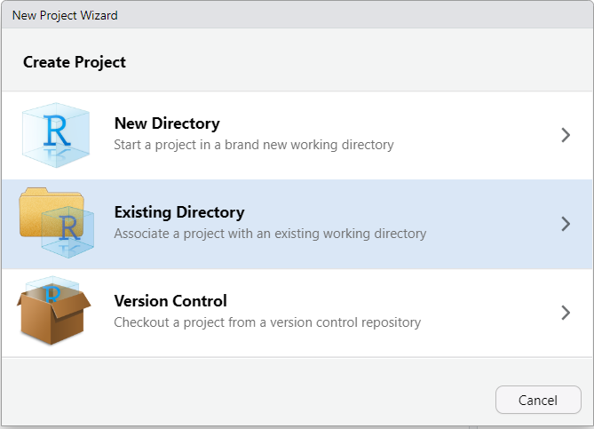
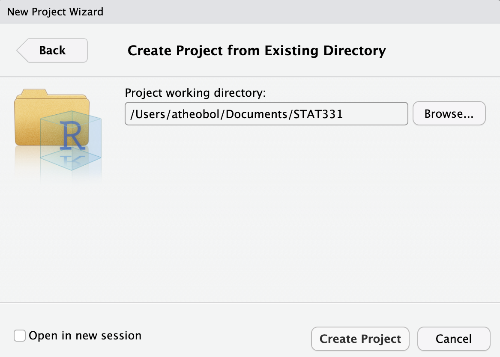
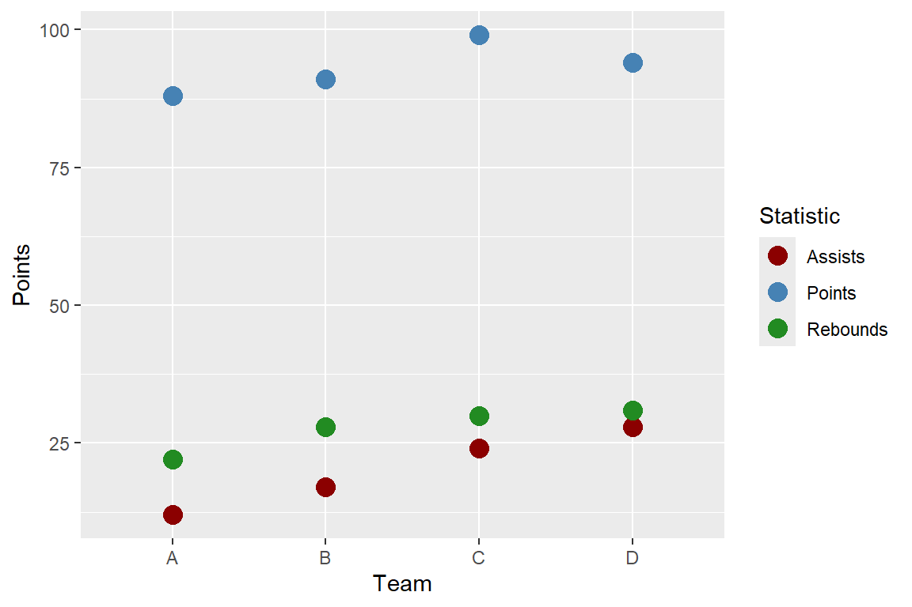
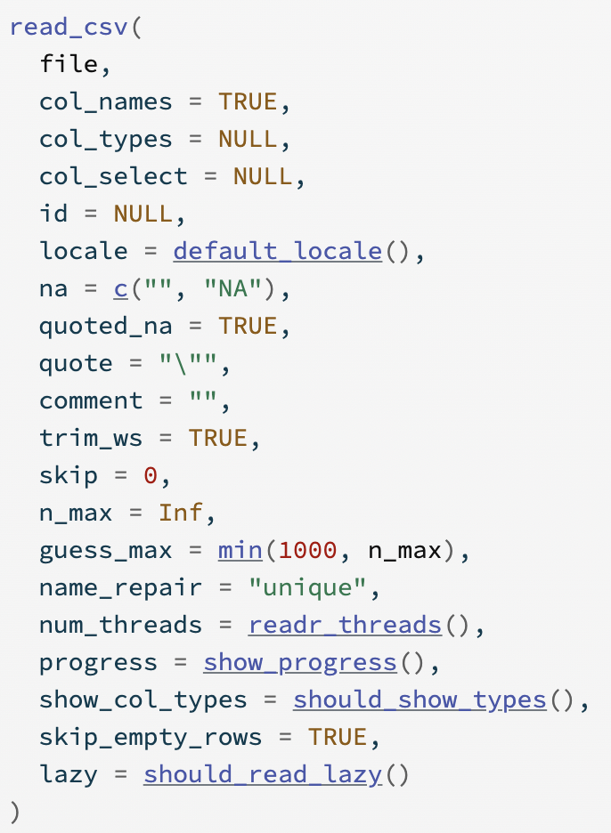

R Projects & Importing Data
0.1 Learning Objectives
- Describe what an R Project is
- Outline how an R Project affects the file paths used to read in data
- Read in data from common formats into R
- Identify missing data and type of missingness
0.1.0.1 📽 Watch Videos: See Canvas
0.1.0.2 📖 Readings: 30-45 minutes
0.1.0.3 ✅ Check-ins: 1
1 Directories, Paths, and Projects
We have learned how to organize our personal files and locate them using absolute and relative file paths. The idea of a “base folder” or starting place was introduced as a working directory. In R, there are two ways to set up your file path and file system organization:
- Set your working directory in
R(do not recommend) - Use R Projects (preferred!)
1.1 Working Directories in R
To find where your working directory is in R, you can either look at the top of your console or type getwd() into your console.
getwd()Although it is not recommended, you can set your working directory in R with setwd():
setwd("/path/to/my/assignment/folder")
CautionFile Paths in
R
A quick warning on file paths is that Mac / Linux and Windows differ in the direction of their backslash to separate folder locations. Mac/Linux use / (e.g. STAT210/Week1) while Window’s uses \ (e.g. STAT210\Week1).
1.2 R Projects
📖 Review Reading: Workflow (R Projects)
NoteOnly read Section 6.2!
1.2.1 Create an R Project from an Existing Folder
So far, each time we have worked in R we have created an R Project. The R Project lives in the created folder for two reasons, (1) when you copy a GitHub repository you told RStudio you wanted to make a new R Project, and (2) in order for RStudio to talk with GitHub you need to use an R Project.
However, if you look in any other folder on your computer, you should not see a blue cube since you never created an R Project in those folders. Suppose we have a project we’ve been work on and we never created an official R Project for it (perhaps it is a folder filled with data sets or someone sent a zipped filed that didn’t contain an R Project file (.RProj).
To add a R Project to an existing folder on your computer (e.g., you already created a folder for the project), first open RStudio on your computer and click File > New Project, then select Existing Directory:

Then, browse on your computer to where you saved your project folder (it should be on your hard drive and not on iCloud, Google Drive, or One Drive). For example, let’s say you had a folder called STAT331 that you wanted to turn into a R Project. Select that folder.

Once you click “Create Project”, your existing folder, STAT331 should now contain a STAT331.Rproj file. This is your new “home” base for this class - whenever you refer to a file with a relative path it will begin to look for it here.
If you would like a list of step-by-step instructions for this process, feel free to look at this file: Creating a Project in an Existing Directory
2 Tidy Data
2.1 Tidy Data
![An educational graphic explaining 'Tidy Data' with text and a simple table. The main text at the top reads, 'TIDY DATA is a standard way of mapping the meaning of a dataset to its structure,' followed by the attribution to Hadley Wickham. Below, it explains the concept of tidy data: 'In tidy data: each variable forms a column, each observation forms a row, each cell is a single measurement.' To the right, there is a small table with three columns labeled 'id,' 'name,' and 'color,' demonstrating how each column is a variable and each row is an observation. The table contains entries such as 'floof' (gray), 'max' (black), and 'panda' (calico). The image ends with a citation for Hadley Wickham's 2014 paper on Tidy Data.](https://cdn.myportfolio.com/45214904-6a61-4e23-98d6-b140f8654a40/85520b8f-4629-4763-8a2a-9ceff27458bf_rw_1920.jpg?h=21007b20ac00cf37318dca645c215453)
2.2 Same Data, Different Formats
Different formats of the data are tidy in different ways.
| Team | Points | Assists | Rebounds |
|---|---|---|---|
| A | 88 | 12 | 22 |
| B | 91 | 17 | 28 |
| C | 99 | 24 | 30 |
| D | 94 | 28 | 31 |
| Team | Statistic | Value |
|---|---|---|
| A | Points | 88 |
| A | Assists | 12 |
| A | Rebounds | 22 |
| B | Points | 91 |
| B | Assists | 17 |
| B | Rebounds | 28 |
| C | Points | 99 |
| C | Assists | 24 |
| C | Rebounds | 30 |
| D | Points | 94 |
| D | Assists | 28 |
| D | Rebounds | 31 |
2.3 Connection to ggplot
Let’s make a plot of each team’s statistics!
Code
ggplot(data = bb_wide,
mapping = aes(x = Team)) +
geom_point(mapping = aes(y = Points,
color = "Points"),
size = 4) +
geom_point(mapping = aes(y = Assists,
color = "Assists"),
size = 4) +
geom_point(mapping = aes(y = Rebounds,
color = "Rebounds"),
size = 4) +
scale_colour_manual(
values = c("darkred",
"steelblue",
"forestgreen")) +
labs(color = "Statistic")
Code
ggplot(data = bb_long,
mapping = aes(x = Team,
y = Value,
color = Statistic)) +
geom_point(size = 4) +
scale_colour_manual(
values = c("darkred",
"steelblue",
"forestgreen")) +
labs(color = "Statistic")![An illustration featuring a cute, cartoonish scene with three characters sitting on a bench. In the center, there is a smiling blue rectangular character resembling a tidy data table, holding an ice cream cone. On either side of the table are two round, fluffy creatures: one pink on the left and one green on the right, both also holding ice cream cones. Above the characters, the text reads 'make friends with tidy data.' The overall tone of the image is friendly and inviting, encouraging positive feelings toward tidy data.](https://cdn.myportfolio.com/45214904-6a61-4e23-98d6-b140f8654a40/40488240-4609-4dc3-8920-693e078b55ce_rw_1920.jpg?h=2e96a7e21e19c43867546498da026649)
3 Loading Data Into R
3.1 How do I load my data?
3.2 Common Types of Data Files
Look at the file extension for the type of data file.
.csv : “comma-separated values”
Name, Age
Bob, 49
Joe, 40.xls, .xlsx: Microsoft Excel spreadsheet
- Common approach: save as
.csv - Nicer approach: use the
readxlpackage
.txt: plain text
- Could have any sort of delimiter…
- Need to let R know what to look for!
3.3 Common Types of Data Files
What is the delimiter (e.g. comma, tab, space, etc.) for each data file?

3.4 Loading External Data
Using base R functions:
read.csv()is for reading in.csvfiles.read.table()andread.delim()are for any data with “columns” (you specify the separator).
3.5 Loading External Data
The tidyverse has some cleaned-up versions in the readr and readxl packages:
readrpackage is loaded withlibrary(tidyverse)read_csv()is for comma-separated data.read_tsv()is for tab-separated data.read_table()is for white-space-separated data.read_delim()is any data with “columns” (you specify the separator). The above are special cases.
readxlwill need need to be loaded separately withlibrary(readxl)read_xls()andread_xlsx()are specifically for dealing with Excel files.
Remember to load the readr and readxl packages first!
3.6 What’s the difference?
Compare the two functions read.csv() and read_csv() - what do you notice about the possible arguments you can use in each? Why is read_csv() the better option?

3.7 Practice with Importing Data
Use the readr and readxl packages to complete the following exercises.
- Load the appropriate packages for reading in data.
library() loads in packages. You need to supply the package name you need to load inside the parentheses.
library(readr) #for most data files
library(readxl) #for excel data files
library(readr) #for most data files
library(readxl) #for excel data files- Read in the data set ages.csv. Suppress the column names and other output by adding an argument to the function.
Add an argument to suppress the column names and other output.
ages <- read_csv("ages.csv", show_col_types = FALSE)
head(ages)
ages <- read_csv("ages.csv", show_col_types = FALSE)
head(ages)- Read in the data set ages_space.txt, which is tab delimited.
Add an argument to suppress the column names and other output.
ages <- read_tsv("ages_tab.txt", show_col_types = FALSE)
head(ages)
ages <- read_tsv("ages_tab.txt", show_col_types = FALSE)
head(ages)- Read in the data set ages_mystery.txt. We don’t know what the delimiter is here.
Add an argument to suppress the column names and other output.
ages <- read_delim("ages_mystery.txt", show_col_types = FALSE)
head(ages)
ages <- read_delim("ages_mystery.txt", show_col_types = FALSE)
head(ages)- Read in the data set ages.xlsx - notice this is an excel file.
Add an argument to suppress the column names and other output.
ages <- read_excel("ages.xlsx")
head(ages)
ages <- read_excel("ages.xlsx")
head(ages)- Find a way to use
read_csv()to read ages.csv with the variable “Name” as a factor data type and “Age” as a character data type.
There are several solutions to this - try some others to see if you can get similar results.
ages <- read_csv("ages.csv",
col_types = cols(Name = "f",
Age = "c"))
head(ages)
ages <- read_csv("ages.csv",
col_types = cols(Name = "f",
Age = "c"))
head(ages)3.8 Import Multiple Files at Once
If you have multiple files that are organized the same way (same variables names/columns), you can actually import them all at once and combine into one file. Check out the following tutorial:
3.9 Additional Readings
📖 Reading: Missing Data (18.1-18.2)
📖 Reading: Naniar Package Overview